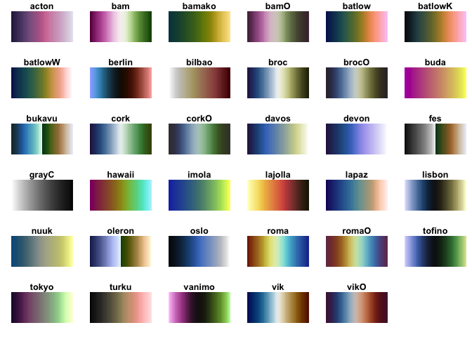

This is a small package to provide access to the colour palettes developed by Fabio Crameri and published at http://www.fabiocrameri.ch/colourmaps.php. It uses more or less the same api as viridis and provides scales for ggplot2 without requiring ggplot2 to be installed.
Installation
scico can be installed from CRAN with install.packages('scico'). If you want the development version then install directly from GitHub:
# install.packages("devtools")
devtools::install_github("thomasp85/scico")Palettes
scico provides 17 different palettes, all of which are perceptually uniform and colourblind safe. An overview can be had with the scico_palette_show() function:

Once you’ve decided on a palette you can generate colour values using the scico() function:
scico(30, palette = 'lapaz')
#> [1] "#190C65" "#1D196C" "#1E2575" "#202F7D" "#223A85" "#25448B" "#274E92"
#> [8] "#2A5898" "#2E629D" "#336CA1" "#3774A3" "#3F7DA5" "#4886A6" "#528EA6"
#> [15] "#5F95A5" "#6C9AA3" "#7A9E9F" "#87A19A" "#95A494" "#A2A58F" "#ADA78B"
#> [22] "#BBA989" "#CAAD8A" "#DBB592" "#EBC0A0" "#F6CCB0" "#FBD7C2" "#FDE0D2"
#> [29] "#FFEAE2" "#FFF2F2"ggplot2 support
scico provides relevant scales for use with ggplot2. It only suggests ggplot2 in order to stay lightweight, but if ggplot2 is available you’ll have access to the scale_[colour|fill]_scico() functions:
library(ggplot2)
volcano <- data.frame(
x = rep(seq_len(ncol(volcano)), each = nrow(volcano)),
y = rep(seq_len(nrow(volcano)), ncol(volcano)),
height = as.vector(volcano)
)
ggplot(volcano, aes(x = x, y = y, fill = height)) +
geom_raster() +
scale_fill_scico(palette = 'davos')